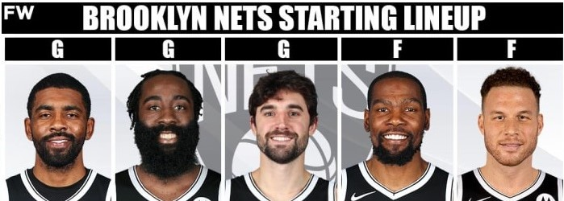

QUI PUOI CAPIRE COME GIRA E FUNZIONA LA NBA .
Prima di tutto dobbiamo analizzare le squadre nella lega piu importante del mondo con un maggior possibilità di vincere il titolo:
| squadra | miglior giocatore | possibilita' di vittoria |
|---|---|---|
| brooklin nets | kevin durant | 85% |
| golden state warriors | stephen curry | 70/75% |
| milwaukee bucks | giannis antetoukumpo | 80/85% |


una delle poche squadre che unisce degli all star con un roster da far venire i brividi a tutte le contendenti al titolo. guidati da coach steve nash che riese a coastruire un unione e una consapevolezza del gioco di squadra ai suoi giocatori. nella squadra prevalgono alcuni giocatori all star come Kevin Durant , James Harden e Kyrie Irving. KD e' una macchina da punti non sbaglia mai un tiro, Irving e'un vero playmaker che crea assist su assist e governa la squadra per fare punti nel migliore dei modi infine harden uno dei migliori tiratori da tre della lega. il problema principale di questa squadra che deve migliorare e' i continui infortuni degli all star
playmaker:Kyrie Irving, guardia:James Harden, ala piccola:Joe Harris, ala grande:Kevin Durant, centro:Blake Griffin
